Die ISBCAD Startseite bietet Ihnen die Möglichkeit, schnell auf Ihre zuletzt verwendeten Dateien und Favoritenverzeichnisse zuzugreifen. Sie können ebenfalls neue Zeichnungen erstellen, Zeichnungen öffnen oder Sicherungen einlesen. Das Einlesen einer DWG/DXF-, PDF- oder IFC-Datei über die jeweilige Importschnittstelle ist ebenfalls möglich. Des Weiteren haben Sie auf den ISBCAD Nachrichtenkanal und unsere Plattformen für Verbesserungsvorschläge Zugriff.
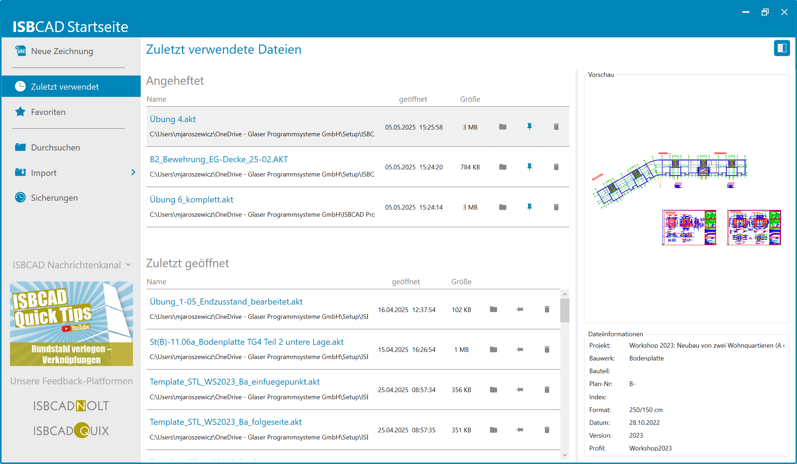 |
ISBCAD Startseite aufrufen
Die ISBCAD Startseite wird in den folgenden Fällen aufgerufen:
·Beim Starten von ISBCAD über die ISBCAD Programmverknüpfung (z. B. auf dem Desktop).
·Über das Windows-Startmenü:
-Windows-Startmenü → Programmgruppe ISBCAD 2026 → ISBCAD.
-Windows-Startmenü → Programmgruppe ISBCAD 2026 → Hauptmenü → Konstruktion und Bewehrung.
Wenn Sie eine AKT-Datei per Doppelklick öffnen, wird die ISBCAD Startseite nicht aufgerufen.
Vorschaubereich
Wenn Sie eine Tabellenzeile markieren, wird eine Vorschau der gewählten Zeichnung mit weiteren Informationen angezeigt. So wissen Sie noch vor dem Öffnen der Zeichnung, ob es sich um die richtige Datei handelt.
Die Dateiinformationen entsprechen den Informationen, die in der Planbeschreibung unter [Konst 3 | PlanBe] eingetragen sind. Sind in der Planbeschreibung Makrotexte vorhanden, wird deren Textinhalt angezeigt. Zusätzlich werden die ISBCAD-Version, mit der die Zeichnung erstellt wurde, sowie das Profil angezeigt, mit dem die Zeichnung gespeichert wurde. Ist das Profil im Profilmanager nicht vorhanden, erscheint hinter dem Profilnamen der Hinweis (nicht vorhanden). In diesem Fall wird die Zeichnung mit dem aktiven Profil oder dem Basisprofil eingelesen.
·Um den Vorschaubereich aus- oder einzublenden, klicken Sie im rechten Fensterbereich auf .
·Um den Vorschaubereich anzupassen, halten Sie über der grauen Trennlinie die linke Maustaste gedrückt: Zum Vergrößern bewegen Sie den Cursor nach links, zum Verkleinern nach rechts.
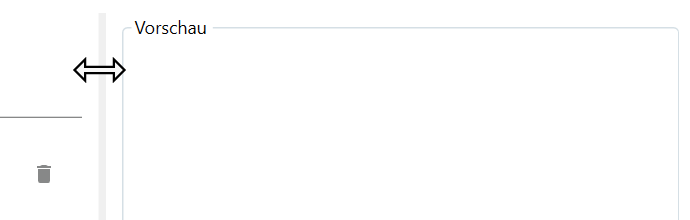 |
Neue Zeichnung erstellen
·Um eine neue Zeichnung zu erstellen, klicken Sie in der Seitenleiste auf Neue Zeichnung.
Alternativ: Drücken Sie direkt nach dem Aufruf der Startseite die Esc-Taste.
Zuletzt verwendete Dateien öffnen
Im Bereich Zuletzt geöffnet werden Ihnen die Zeichnungen angezeigt, die Sie angeheftet, zuletzt geöffnet oder gespeichert haben. Es werden maximal 30 Einträge angezeigt.
·Um eine Zeichnung zu öffnen, klicken Sie auf den Dateinamen oder markieren Sie die Zeile mit einem Linksklick (die Zeile wird grau hinterlegt) und bestätigen Sie mit der Eingabetaste.
Alternativ: Doppelklick auf die Zeile.
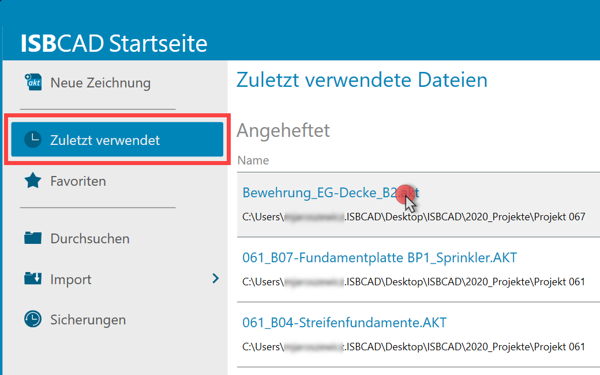 |
Zeichnungen sortieren
Die Zeichnungen lassen sich entweder auf- oder absteigend sortieren.
·Um die Zeichnungen in einer bestimmten Reihenfolge anzuzeigen, klicken Sie die entsprechende Tabellenüberschrift an ("Name", "geöffnet", "Größe"). Klicken Sie eine Tabellenüberschrift ein weiteres Mal an, um die Sortierung umzukehren.
-Name: Sortiert die Zeichnungen alphabetisch.
-geöffnet: Sortiert die Zeichnungen nach dem letzten Speicherzeitpunkt.
-Größe: Sortiert die Zeichnungen nach Dateigröße.
Zuletzt verwendete Dateien an- und abheften
Sie können häufig verwendete Zeichnungen anheften, damit Sie auf diese schnell zugreifen können. Die zuletzt angeheftete Datei wird immer an oberster Stelle angezeigt.
·Um eine Zeichnung anzuheften, klicken Sie auf die Stecknadel .
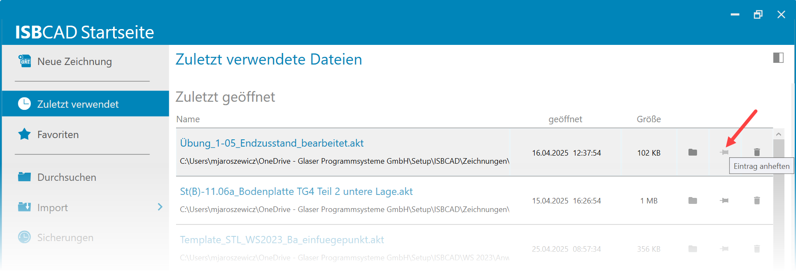 |
Die angeheftete Zeichnung befindet sich im Abschnitt "Angeheftet" und ist so jederzeit leicht erreichbar.
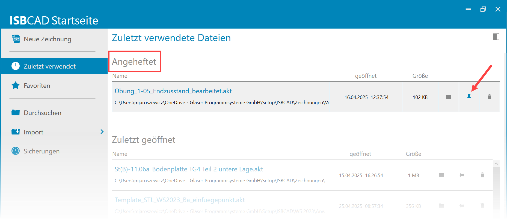 |
·Um eine Zeichnung abzuheften, klicken Sie auf die Stecknadel . Die Zeichnung wird in die Tabelle "Zuletzt geöffnet" und an die oberste Position verschoben. Die Zeichnung wird nicht mehr in der Liste der angehefteten Zeichnungen aufgeführt.
Zuletzt verwendete Dateien von der Startseite entfernen
Sie können Dateien, die Sie nicht mehr benötigen, von der Startseite entfernen. Die entfernten Dateien werden nicht vom Datenträger gelöscht, sie werden nur nicht mehr im Startbildschirm angezeigt.
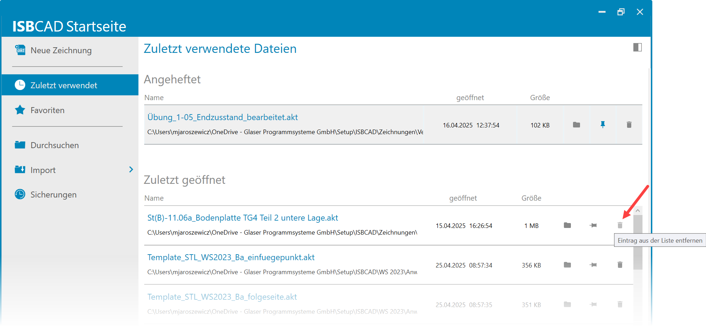 |
·Um eine Zeichnung zu entfernen, klicken Sie am rechten Tabellenrand auf .
Um den Dateispeicherort im Windows-Explorer zu öffnen, klicken Sie auf das Ordner-Icon.
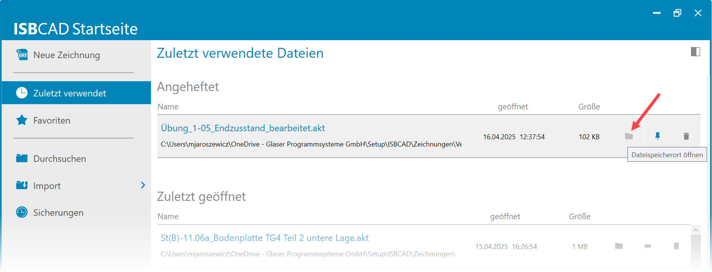 |
Anzeige von nicht gefundenen Dateien
Wenn Zeichnungsdateien vom Datenträger gelöscht wurden, in ein anderes Verzeichnis verschoben oder umbenannt wurden, können sie nicht geöffnet werden. Sie werden allerdings weiterhin in der Tabelle aufgeführt. Der Zeitpunkt des Öffnens und die Dateigröße werden in diesem Fall durch ein (-) ersetzt. Sie können die Einträge von der Startseite entfernen oder die Dateien im entsprechenden Verzeichnis wieder bereitstellen. Schließen Sie nach dem Bereitstellen der Datei die Startseite und öffnen Sie sie erneut, um die Tabelleneinträge zu aktualisieren.
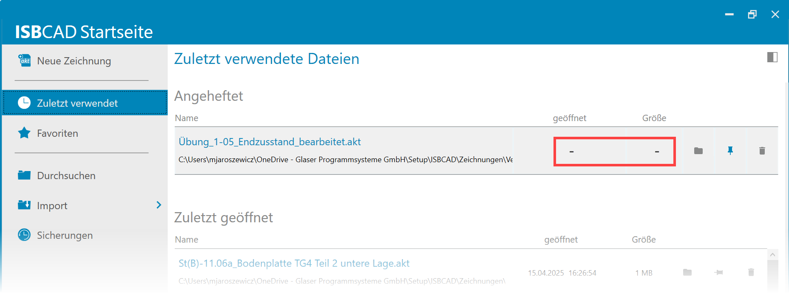 |
Favoritenverzeichnisse durchsuchen
Wenn Sie in den Systemdaten ein Projektverzeichnis und/oder Favoritenverzeichnisse angelegt haben, werden diese Verzeichnisse unter Favoriten angezeigt. So können Sie schnell zum Projektordner navigieren und diesen nach Zeichnungen durchsuchen.
·Wechseln Sie dazu im linken Seitenbereich auf den Eintrag Favoriten. Zunächst wird nur der Inhalt des Projektverzeichnisses angezeigt. Klicken Sie mit einem Doppelklick auf einen Ordner , um diesen zu öffnen, oder auf eine Datei, um diese einzulesen.
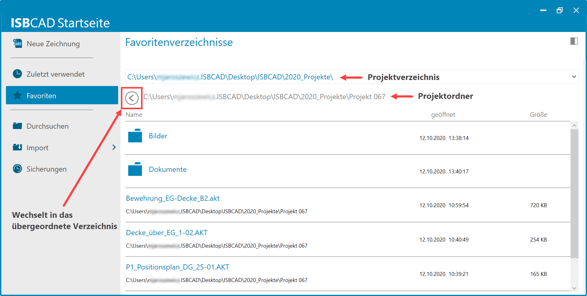 |
·Über den Pfeil  können Sie eine Liste aufklappen, die an oberster Position das Projektverzeichnis und darunter die angegebenen Favoritenverzeichnisse enthält. Klicken Sie in der Ausklappliste einen Eintrag an, um den Inhalt des Ordners anzuzeigen.
können Sie eine Liste aufklappen, die an oberster Position das Projektverzeichnis und darunter die angegebenen Favoritenverzeichnisse enthält. Klicken Sie in der Ausklappliste einen Eintrag an, um den Inhalt des Ordners anzuzeigen.
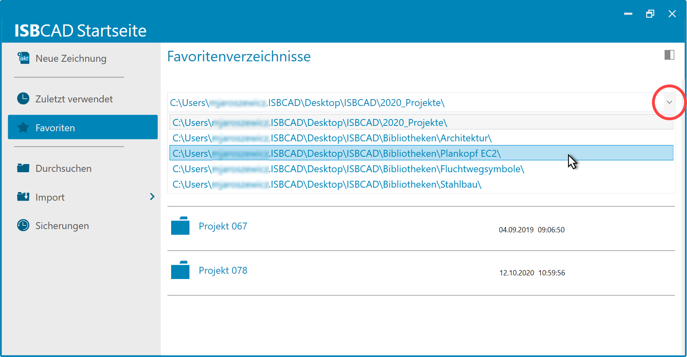 |
Zeichnung öffnen
·Um das Dateisystem nach einer Zeichnung zu durchsuchen, klicken Sie auf Durchsuchen. Navigieren Sie anschließend zu der entsprechenden Datei und klicken Sie auf Öffnen.
Sie können eine DWG/DXF-, PDF- oder IFC-Datei über die jeweilige Importschnittstelle in ISBCAD einlesen. Dabei wird zunächst eine neue Zeichnung erstellt und anschließend der Import-Dialog geöffnet.
·Fahren Sie mit der Maus über den Eintrag Import und klicken Sie in der Ausklappliste das entsprechende Dateiformat an.
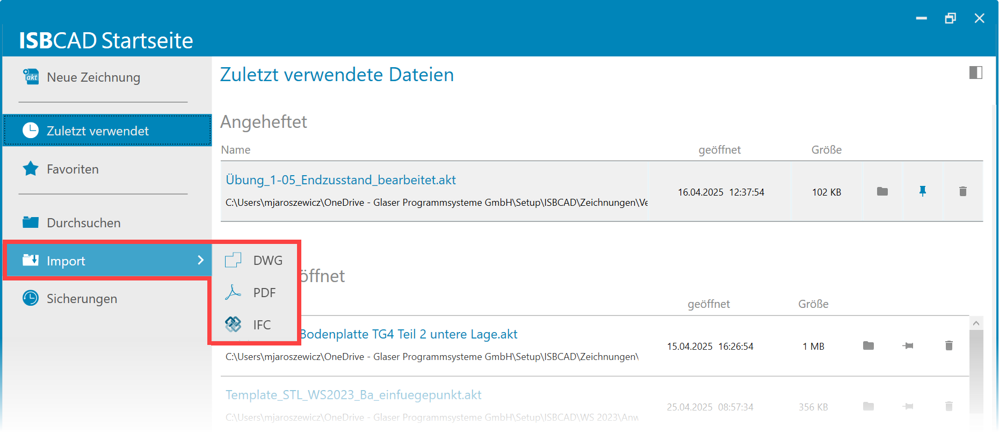 |
Sicherungsdatei öffnen
Im Bereich Sicherungen haben Sie Zugriff auf Ihre automatischen oder manuellen Zeichnungssicherungen.
·Um den Sicherungsdialog zu öffnen, klicken Sie auf Sicherungen.
ISBCAD Nachrichtenkanal und Feedback-Plattformen öffnen
ISBCAD Nachrichtenkanal
Der ISBCAD Nachrichtenkanal ist Bestandteil der Webseite www.glasercad.de. Hier informiert GLASER über aktuelle CAD-Themen und wichtige Ereignisse. Auf der ISBCAD Startseite wird ein Vorschaubild des zuletzt veröffentlichten Beitrags angezeigt.
·Klicken Sie auf das Vorschaubild, um den ISBCAD Nachrichtenkanal im Standardbrowser zu öffnen. Nachdem Sie den Nachrichtenkanal einmal geöffnet oder den Eintrag über den Pfeil rechts manuell geschlossen haben, bleibt dieser beim nächsten Öffnen der ISBCAD Startseite eingeklappt. Sie können den Eintrag jederzeit wieder ausklappen, indem Sie auf den Pfeil klicken . Sobald ein neuer Beitrag veröffentlicht wird, erscheint automatisch wieder das zugehörige Vorschaubild.
·Der ISBCAD Nachrichtenkanal kann direkt aus ISBCAD geöffnet werden. Siehe: ISBCAD Nachrichtenkanal (Programmoberfläche).
ISBCAD.NOLT
Der Link öffnet die ISBCAD.NOLT-Plattform im Standardbrowser zum Eintragen von Verbesserungsvorschlägen für ISBCAD.
ISBCAD.QUIX
Der Link öffnet im Standardbrowser eine Plattform, auf der Vorschläge für Quick-Tip-Videos eingetragen werden können. Andere Anwender können für einen Vorschlag stimmen, und somit entscheiden, welche Quick-Tip-Videos aufgenommen werden.
Die Plattformen ISBCAD.NOLT und ISBCAD.QUIX können ebenfalls über die ISBCAD Menüleiste geöffnet werden:
·[Menüleiste | Support | ISBCAD.NOLT - Ideenportal für ISBCAD]
·[Menüleiste | Hilfe | ISBCAD.QUIX - Ideenportal für Quick Tips]
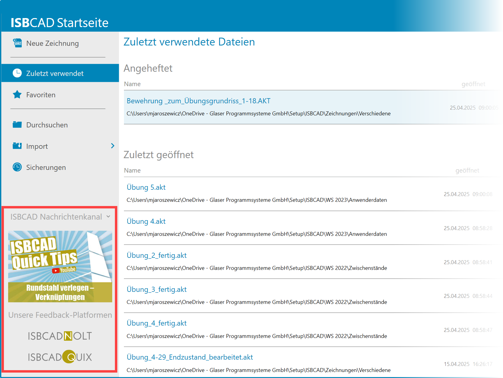 |
Siehe auch: